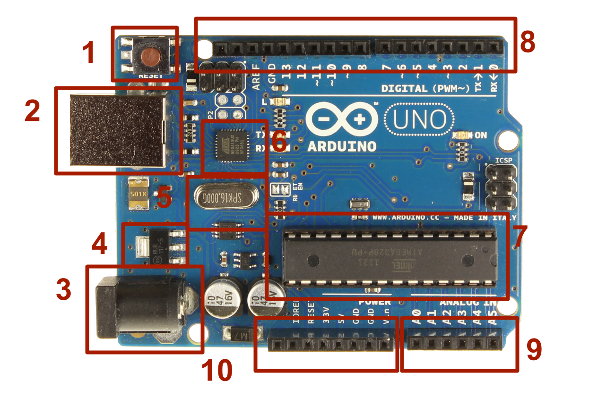
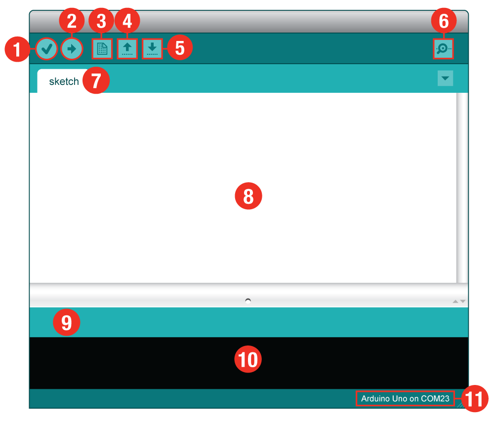

- Development kits
- Gebaseerd rond een microcontroller
- Voorziet de nodige componenten
- Boards zijn uitbreidbaar met shields
- Verschillende boards met specifieke doelen.

Arduino: Uno
- Reset switch
- USB B Connector:
- Connectie met PC
- Voedingsbron (5V)
- Barrel jack:
- Voedingsbron
- Input spanning 7V - 12V
- Voltage regulator

Arduino: Uno
- 16MHz kristal
- ATMega8U2
- Hulp microcontroller
- USB naar UART bridge
- ATmega328p
- Hoofd microcontroller
- 8 bit mcu
- AVR familie
- Brein van het Arduino board
Arduino: Software
- Beschikbaar stellen van libraries
- Gebaseerd op:
- Wiring
- Processing
- avr-libc
- C++ Gebaseerde taal
- Neemt abstractie van de hardware
- Code kan voor meerdere boards compileren
- Werking van de microcontroller is verstopt
Arduino: IDE
- Verify:
Compileert de code met avr-gcc
- Upload:
Compileert de code met avr-gcc en
upload de code met avrdude
- New
- Open
- Save

Arduino: IDE
- Serial Monitor
- Filename
- Sketch
- Statusbar
- Build output
- Board settings
Sketches
- Sketches = Arduino programma's
- Examples sketches beschikbaar in de Arduino IDE
- .ino extensie
- 2 grote componenten
- Runt eenmaal
void setup();
- Eindeloze loop
void loop();
- Documentatie
Blink Sketch
void setup() {
pinMode(LED_BUILTIN, OUTPUT);
void loop() {
digitalWrite(LED_BUILTIN, HIGH); // turn the LED on (HIGH is the voltage level)
delay(1000); // wait for a second
digitalWrite(LED_BUILTIN, LOW); // turn the LED off by making the voltage LOW
delay(1000); // wait for a second
}
Try it!